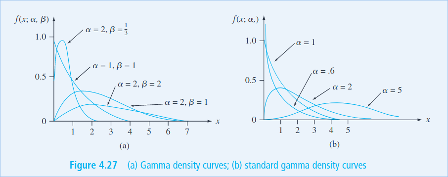

Fundamentals of Probability and Statistics - Final
Table of Contents
- 1. First Part
- 2. Random Variables
- 3. Discrete Random Variable
- 4. Continuous Probability Distributions
- 4.1. Probability Density Function
- 4.2. Cumulative Distribution Function
- 4.3. Percentiles
- 4.4. Mean, Median and Variance
- 4.5. Normal Distribution
- 4.6. Binomial Distribution Approximation
- 4.7. Uniform Distribution
- 4.8. Gamma Distribution
- 4.9. Exponential Distribution
- 4.10. Chi-Squared Distribution
- 4.11. The Weibull Distribution
- 4.12. The Log normal Distribution
- 4.13. Beta Distribution
- 5. Joint Probability Distributions
- 6. Practice Questions
1. First Part
Key concepts which were on the midterm:
- Computing Means and Variances
- Five Number Summary
- Probability of independent compound events
- Conditional Probability
- Bayes Theorem
- Empirical Rule and Chebyshev's Theorem
- Linear Relationships and Correlation
- Types of Studies (Enumerative, Analytical)
- Stem and Leaf Plots
- Box Plots
You can find these in the midterm notes.
2. Random Variables
In any experiment, we are concerned with the value of some random variable (RV) \(X\). We can also define a random variable in terms of some other variable (\(\omega\)), in that case we say that \(X\) is associated with the outcome of \(\omega\).
If the random variabe can only have two possible outcomes (0,1) we call it a Bernoulli Random Variable. For any other outcomesl, we then have two types or random variables: Discrete and Continuous.
3. Discrete Random Variable
This is a random variable which can take on only a finite amount of possible values. For example, the number of heads in 10 coin flips.
Example: The number of heads in 10 coin flips
3.1. Distributions
We can assign a certain probability to each possible value of a random variable. This is called a probability distribution. Here are some key characteristics of a distribution:
- The sum of all probabilities must be 1
- The probability of a value is always between 0 and 1
- The probability of a value is always non-negative
3.2. Probability Mass Function (\(pmf\))
We denote the probability of a value \(x\) as \(P(X=x)\) - this is called elementary probability. We can also use tables to represent the distribution of a random variable. For example, the distribution of the number of heads in 10 coin flips is:
| x | P(X=x) |
|---|---|
| 0 | 0.001 |
| 1 | 0.01 |
| 2 | 0.05 |
| 3 | 0.15 |
| 4 | 0.25 |
| 5 | 0.25 |
| 6 | 0.15 |
| 7 | 0.05 |
| 8 | 0.01 |
| 9 | 0.001 |
This function specifies the probability of each value. This is called the probability mass function of the random variable. It is denoted as \(pmf(x)\). To be able to solve problems involving random variables, and their probabilities, it is important to understand probability itself.
We can also define a probability distribution in terms of some parameter \(\alpha\). For simplicity, lets start with Bernouilli:
| \(x\) | \(P(X=x)\) |
|---|---|
| 0 | 1-\(\alpha\) |
| 1 | \(\alpha\) |
We would denote this function as \(p(x;\alpha)\). Where \(\alpha\) is the parameter of the distribution and can take a value \(0 < \alpha < 1\).
3.3. Cumulative Distribution Function (\(cdf\))
We can also use make use of elementary probability to compute the probability of a range of values. For example, the probability of getting between 3 and 5 heads in 10 coin flips is:
\[ P(3\leq X\leq 5) = P(X=3) + P(X=4) + P(X=5) = {120\over 1024} + {210\over 1024} + {252\over 1024} = {582\over 1024} = {29\over 51} = 0.5686 \]
This kind of probability is called cumulative probability. A cumulative function gives us the sum of all the probabilities of all the values less than or equal to a certain value. For a discrete random variable we define it as:
\[ F(x) = P(X\leq x) = \sum_{i=-\infty}^{x} \text{pmf}(i) \]
You may notice that it is somewhat related to integrals in calculus, as we denote the 'area' with a capital F. Another way to relate this to calculus is the definition of a defined integral. If we want the probability of a range of values, we can use the following definition:
\[ P(a\leq X\leq b) = F(b) - F(a) \]
Here are some approaches to calculating various cumulative probabilities:
- \(P(x > a)\) = \(1 - P(x \leq a)\)
- \(P(x < a)\) = \(P(x \leq a)\)
- \(P(x \geq a)\) = \(1 - P(x < a)\)
- \(P(x \leq a)\) = \(P(x < a) + P(x = a)\)
- \(P(x \geq a)\) = \(P(x > a) + P(x = a)\)
- \(P(a < x < b)\) = \(P(x < b) - P(x < a)\)
- \(P(a \leq x \leq b)\) = \(P(x \leq b) - P(x \leq a)\)
3.4. Expected Values
We can also compute the expected value of a random variable. This is the average value of the random variable. For example, the expected value of the number of heads in 10 coin flips is:
\[ E(X) = \sum_{i=-\infty}^{\infty} i \cdot \text{pmf}(i) = 0 \cdot {1\over 2} + 1 \cdot {1\over 2} = {1\over 2} \]
Here you can see the use of the formula to compute the expected value of a discrete rv \(X\):
\[ E(X) = \mu_x = \sum_{i=-\infty}^{\infty} i \cdot \text{pmf}(i) \]
We might also need to comput the standard deviation. This is the average distance of the random variable from the expected value. To compute this, we use the following formula:
\[ \sigma_x = \sqrt{\sum_{i=-\infty}^{\infty} (i - \mu_x)^2 \cdot \text{pmf}(i)} \]
We can also compute the variance using the expected values:
\[ \sigma_x^2 = E(X^2) - E(X)^2 \]
3.5. Binomial Distribution
The binomial distribution is a discrete distribution that is used to model the number of successes in a sequence of independent experiments. For example, the number of heads in 10 coin flips. The binomial distribution is defined by two parameters:
- \(n\) - the number of trials
- \(\alpha\) - the probability of success
The binomial distribution is defined as:
\[ P(X=x) = {n\choose x} \alpha^x (1-\alpha)^{n-x} \]
Where \({n\choose x}\) is the binomial coefficient. This is the number of ways to choose \(x\) elements from a set of \(n\) elements. This is defined as: \({n\choose x} = {n! \over x!(n-x)!}\)
We can use this formula to calculate the probability of an exact number of successes. For example, the probability of getting 5 heads in 10 coin flips is: \({10\choose 5} \cdot {1\over 2}^5 \cdot {1\over 2}^5 = {120\over 1024} = {3\over 32} = 0.0938\)
3.6. Geometric Distribution
The geometric distribution is a discrete distribution that is used to model the number of trials until the first success. For example, the number of coin flips until the first head. The geometric distribution is defined by one parameter: \(\alpha\) - the probability of success. The geometric distribution is defined as:
\[ P(X=x) = (1-\alpha)^{x-1} \alpha \]
We can use this formula to calculate the probability of an exact number of trials. For example, the probability of getting 5 coin flips until the first head is: \((1-{1\over 2})^{5-1} \cdot {1\over 2} = {1\over 32} = 0.0312\)
3.7. Poisson Distribution
This is a distribution which can help us model the number of events for some interval of time. The poisson distribution is defined by one parameter: \(\lambda\) - the average number of events per interval. The poisson distribution is defined as:
\[ P(X=x) = \frac{\lambda^x e^{-\lambda}}{x!} \]
It will gives us the probability of getting a certain amount \(x\) of events in a certain interval. For example, the probability of getting 5 cars in an hour if the average is 71.5 cars per hour is:
\[ P(X=5) = \frac{71.5^5 e^{-71.5}}{5!} = 0.0001 = 0.01\% \]
Important: The poisson distribution is only valid for large values of \(\lambda\). For small values, the binomial distribution is more accurate.
4. Continuous Probability Distributions
Back to random variables. If the two following condisions are met, we can call a random variable continuous:
- The random variable can take on any value in an interval (can be inifinite)
- The probability of the random variable taking on any value in an interval is 0 (\(P(X = c) = 0\))
Example: The height of a person
4.1. Probability Density Function
If we have such a continuous random variable, we can compute the probability is given by the pdf. We can use this pdf to compute probabilities on a certain interval using integrals:
\[ P(a \leq X \leq b) = \int_a^b f(x) \, dx \]
Here are some requirements for the pdf:
- The pdf must be non-negative: \(f(x) \geq 0\)
- The area under the pdf must be 1: \(\int_{-\infty}^{\infty} f(x) \, dx = 1\)
4.2. Cumulative Distribution Function
We can also compute the cdf of a continuous random variable. This is the probability that the random variable is less than or equal to a certain value. We can compute this using the pdf:
\[ F(x) = \int_{-\infty}^x f(x) \, dx \]
Similar to the pdf, the cdf must be non-negative and integrate to 1. We can also use some properties of the cdf to compute probabilities:
- \(P(X \leq x) = F(x)\)
- \(P(a \leq X \leq b) = F(b) - F(a)\)
- \(P(X > x) = 1 - F(x)\)
4.3. Percentiles
The percentile of a random variable is the value such that a certain percentage of the random variable is less than or equal to that value. For example, the 50th percentile is the value such that 50% of the random variable is less than or equal to that value.
Given that \(p\) is some proportion (value between 0 and 1) we can compute the percentile using the cdf:
\[ p = F(\eta (p)) = \int_{-\infty}^{\eta (p)} f(x) \, dx \]
4.4. Mean, Median and Variance
The mean of a continuous random variable is defined as:
\[ \mu_x = E(X) = \int_{-\infty}^{\infty} x \cdot f(x) \, dx \]
The median of a continuous random variable is defined as (It is the 50th percentile):
\[ \tilde{\mu}_x = \eta (0.5) = \int_{-\infty}^{\eta (0.5)} x \cdot f(x) \, dx \]
The variance of a continuous random variable is defined as:
\[ \sigma_x^2 = E(x-\mu)^2 = \int_{-\infty}^{\infty} (x-\mu)^2 \cdot f(x) \, dx = E(X^2) - E(X)^2 \]
4.5. Normal Distribution
The normal distribution is a continuous distribution that is used to model a random variable that is normally distributed. The normal distribution is defined by two parameters: \(\mu\) - the mean and \(\sigma\) - the standard deviation. The normal distribution is defined as:
\[ f(x) = \frac{1}{\sqrt{2\pi}\sigma} e^{-\frac{(x-\mu)^2}{2\sigma^2}} \]
This formula is useless. What we are mostly concerned with are z scores. They can tell us the probability of a certain value. For example. If we have a normal distribution with mean 0 and standard deviation 1, the probability of getting a value less than or equal to 1 is: \(\Phi(1) = \int_{-\infty}^1 \frac{1}{\sqrt{2\pi}} e^{-\frac{x^2}{2}} \, dx = 0.8413\) We can also figure this out with the z-table.
To calculate a z-score we can use the following formula: \(z = \frac{x-\mu}{\sigma}\). From this we can derive the probability of a certain interval:
\[ P(a \leq X \leq b) = \Phi(\frac{b-\mu}{\sigma}) - \Phi(\frac{a-\mu}{\sigma}) \]
It is also important to remember the empirical rule:
- 68% of the data is within 1 standard deviation of the mean
- 95% of the data is within 2 standard deviations of the mean
- 99.7% of the data is within 3 standard deviations of the mean
4.6. Binomial Distribution Approximation
The binomial distribution is a discrete distribution that is used to model the number of successes in a fixed number of trials. For example, the number of heads in 10 coin flips. The binomial distribution is defined by two parameters: \(n\) - the number of trials and \(p\) - the probability of success. We can approximate this distribution with the normal distribution if the following conditions are met:
- \(np \geq 10\)
- \(n(1-p) \geq 10\)
The formula for approximation using simply phi notation is:
\[ P(X \leq x) = B(x,n,p) \approx \Phi(\frac{x+0.5-np}{\sqrt{np(1-p)}}) \]
4.7. Uniform Distribution
A continuous probability distribution where all outcomes have an equal probability of occurring. It is said to be uniform if the pdf of X is:
\[ f(x) = \begin{cases} {1\over b-a} & \text{if } a \leq x \leq b \\ 0 & \text{otherwise} \end{cases} \]
What this is saying is that the function on the interval \([a,b]\) is a constant. The probability of getting any value in the interval is the same. For example, the probability of getting a number between 1 and 10 is the same as getting a number between 100 and 1000. The probability of getting a number between 1 and 10 is: \({1\over 10-1} = {1\over 9} = 0.1111\)
4.8. Gamma Distribution
The gamma distribution relies on the gamma function. This function is defined as:
\[ \Gamma(x) = \int_0^\infty t^{x-1} e^{-t} \, dt \]
It has the following properties:
- \(\Gamma(x) = (x-1)!\) for all positive integers
- \(\Gamma(1\over 2) = \sqrt{\pi}\)
From this function we can get to the Gamma distribution. This distribution is defined by two parameters: \(\alpha\) and \(\beta\). The pdf of the Gamma distribution is:
\[ f(x;\alpha,\beta) = \begin{cases} \frac{\beta^\alpha}{\Gamma(\alpha)} x^{\alpha-1} e^{-\beta x} & \text{if } x \geq 0 \\ 0 & \text{otherwise} \end{cases} \]
There are many variations of this distribution. The most common is the standard Gamma distribution. This distribution is defined by one parameter: \(\alpha\) and \(\beta\) is given the value of 1. The pdf of the standard Gamma distribution is:
\[ f(x;\alpha) = \begin{cases} \frac{1}{\Gamma(\alpha)} x^{\alpha-1} e^{-x} & \text{if } x \geq 0 \\ 0 & \text{otherwise} \end{cases} \]
We can also derive the exponential distribution from the Gamma distribution. We do this by setting \(\alpha = 1\) and \(\beta = {1 \over \lambda}\). The pdf of the exponential distribution can be seen above.
There are plenty of other derivations of the gamma function, this graphic shows some of them:

The mean and variance of the Gamma distribution are:
\[ \mu = \frac{\alpha}{\beta} \qquad \sigma^2 = \frac{\alpha}{\beta^2} \]
4.8.1. Cumulative Distribution Function
The cdf of the standard Gamma distribution is:
\[ F(x;\alpha,\beta) = \begin{cases} \int_0^x \frac{\beta^\alpha}{\Gamma(\alpha)} t^{\alpha-1} e^{-\beta t} \, dt & \text{if } x \geq 0 \\ 0 & \text{otherwise} \end{cases} \]
This is also called the incomplete gamma function. This is what we will mostly use, because we can find the values in a table.
For an arbitrary gamma distribution, the cdf is:
\[ P(X \leq x) = F(x;\alpha,\beta) = F(\frac{x}{\beta};\alpha) \]
Where \(F\) is the cdf of the standard Gamma distribution or the incomplete gamma function.
4.9. Exponential Distribution
If we have some data which is not normally distributed, we can make use of the family of gamma functions. We will first look at the exponential distribution. The pdf of the exponential distribution is:
\[ f(x;\lambda) = \begin{cases} \lambda e^{-\lambda x} & \text{if } x \geq 0 \\ 0 & \text{otherwise} \end{cases} \]
The exponential distribution is a continuous distribution that is used to model the time between events. For example, the time between failures of a machine. The parameter \(\lambda\) is the rate of the distribution. The mean and variance of the distribution are:
\[ \mu = \frac{1}{\lambda} \qquad \sigma^2 = \frac{1}{\lambda^2} \]
The cdf of the exponential distribution is:
\[ F(x;\lambda) = \begin{cases} 1 - e^{-\lambda x} & \text{if } x \geq 0 \\ 0 & \text{otherwise} \end{cases} \]
The exponential distribution will tell us the probability of an event occurring in a certain time interval. For example, the probability of a machine failing in the next 10 minutes is: \(1 - e^{-\lambda \cdot 10} = 1 - e^{-\lambda \cdot 10} = 0.9999\). Here we assume that the machine fails at a constant rate \(\lambda\).
4.10. Chi-Squared Distribution
We use this distribution to test the goodness of a fit for a model. It is a very important distribution in statistical inference. The pdf of the chi-squared distribution is:
\[ f(x;k) = \frac{1}{2^{k/2}\Gamma(k/2)} x^{k/2-1} e^{-x/2} \]
This so for any \(x \geq 0\) and \(k\) is a positive integer. The parameter \(k\) si the degrees of freedom.
The mean and variance of the chi-squared distribution are:
\[ \mu = k \qquad \sigma^2 = 2k \]
The way we might use this distribution is to test the goodness of a fit for a model. For example, we might have a model that predicts the number of failures of a machine. We can then compare the predicted number of failures to the actual number of failures. If the model is a good fit, then the predicted number of failures should be close to the actual number of failures. We can then use the chi-squared distribution to test the goodness of the fit.
4.11. The Weibull Distribution
This is a kind of distribution used generally for reliability analysis. The pdf of the Weibull distribution is:
\[ f(x; \alpha; \beta) = \begin{cases} \frac{\alpha}{\beta} \left(\frac{x}{\beta}\right)^{\alpha-1} e^{-\left(\frac{x}{\beta}\right)^\alpha} & \text{if } x \geq 0 \\ 0 & \text{otherwise} \end{cases} \]
The mean and variance of the Weibull distribution are (awful):
\[ \mu = \beta \Gamma(1 + \frac{1}{\alpha}) \qquad \sigma^2 = \beta^2 \left[\Gamma(1 + \frac{2}{\alpha}) - \left(\Gamma(1 + \frac{1}{\alpha})\right)^2\right] \]
As for the cdf, it is:
\[ F(x;\alpha,\beta) = \begin{cases} 1 - e^{-\left(\frac{x}{\beta}\right)^\alpha} & \text{if } x \geq 0 \\ 0 & \text{otherwise} \end{cases} \]
4.12. The Log normal Distribution
This is a continuous distribution that is used to model the time between events. For example, the time between failures of a machine. This distribution is used if the \(ln(X)\) is a normal distribution. The pdf of the log normal distribution is:
\[ f(x;\mu,\sigma) = \frac{1}{x \sigma \sqrt{2\pi}} e^{-\frac{1}{2}\left(\frac{\ln(x) - \mu}{\sigma}\right)^2} \]
In this case, the parameters \(\mu\) and \(\sigma\) are the mean and standard deviation of the normal distribution of \(ln(X)\). The mean and variance of the log normal distribution are:
\[ \mu = e^{\mu + \frac{\sigma^2}{2}} \qquad \sigma^2 = \left(e^{\sigma^2} - 1\right) e^{2\mu + \sigma^2} \]
Since the log distribution should be normal, we can express the cdf in terms of the normal distribution:
\[ F(x;\mu;\sigma) = P(Z \leq \frac{\ln(x) - \mu}{\sigma}) = \Phi\left(\frac{\ln(x) - \mu}{\sigma}\right) \]
Where \(\Phi\) is the cdf of the standard normal distribution.
4.13. Beta Distribution
Once of the biggest differentiating factors of the beta distribution is that it is a continuous distribution which maintains an above 0 probability for all values of \(x\). The pdf of the general beta distribution is:
\[ f(x;\alpha,\beta;A;B) = \frac{1}{B-A} \frac{\Gamma(\alpha + \beta)}{\Gamma(\alpha)\Gamma(\beta)} x^{\alpha-1} (1-x)^{\beta-1} \]
The standard beta distribution is defined by \(A=0\) and \(B=1\).
The mean and variance of the beta distribution are:
\[ \mu = \frac{\alpha}{\alpha + \beta} \qquad \sigma^2 = \frac{\alpha\beta}{(\alpha + \beta)^2(\alpha + \beta + 1)} \]
The cdf of the beta distribution is:
\[ F(x;\alpha,\beta;A,B) = \frac{\Gamma(\alpha + \beta)}{\Gamma(\alpha)\Gamma(\beta)} \int_0^x t^{\alpha-1} (1-t)^{\beta-1} dt \]
5. Joint Probability Distributions
Many problems in probability and statistics involve working simultaneously with two or more random variables. For example, X and Y might be the income and willingness to pay for a good, respectively, of a randomly selected individual. This topic address the concept of joint probability distributions. Jointly Distributed Random Variables. Expected Values, Covariance, and Correlation. Statistics and Their Distributions. The Distribution of the Sample Mean. The Distribution of a Linear Combination
6. Practice Questions
6.1. Questions from Book
The number of pumps in use at both a six-pump station and a four-pump station will be determined. Give the possible values for each of the following random variables:
- \(T\) = The number of pumps in use
- \(X\) = Difference between the number in use at station 1 and 2
- \(U\) = The max number of pumps in use at either station
- \(Z\) = The number of stations have exactly two pumps in use
Answer:
- \(T \in \{0,1,2,3,4,5,6,7\}\)
- \(X \in \{-2,-1,0,1,2\}\)
- \(U \in \{0,1,2,3,4,5,6,7\}\)
- \(Z \in \{0,1\}\)
6.2. Short Answer
- What are the two fundamentally different types of random variables?
- Answer: Discrete random variables and continuous random variables.
- What are the three basic principles of probability?
- Answer: The three basic principles of probability are sample spaces and events, axioms and properties of probability, and counting techniques.
- What is the expected value for a discrete random variable?
- Answer: The expected value for a discrete random variable is the sum of the values of each outcome multiplied by the probability of that outcome.
- What is the difference between a probability density function and a cumulative distribution function?
- Answer: A probability density function is a formula that describes the relative likelihood of a random variable taking on a given value, while a cumulative distribution function is a formula that describes the cumulative probability of a random variable taking on a value less than or equal to a given value.
- What is the purpose of point estimation?
- Answer: The purpose of point estimation is to use a sample to compute a number that represents in some sense an educated guess for the true value of a parameter such as a population mean or population proportion.
- What is the distribution of the sample mean?
- Answer: The distribution of the sample mean is a normal distribution with mean equal to the population mean and standard deviation equal to the population standard deviation divided by the square root of the sample size.
6.3. Questions 1
What type of data does Fundamentals of Statistics examine?
- Graphical methods
- Numerical methods
- Random variables
- Quantitative and qualitative data
Answer: D. Quantitative and qualitative data
What is the purpose of studying Probability?
- To quantify the chances of different outcomes in a given situation
- To measure the variance in a population
- To study randomness and uncertainty
- To estimate population mean or proportion
Answer: C. To study randomness and uncertainty
What are examples of discrete random variables?
- Bernouilli distribution, Normal Distribution, Exponential Distribution
- Binomial distribution, Poisson distribution, Gamma Distribution
- Stem-and-leaf displays, dotplots, histograms, boxplots
- Mean, median, sample proportions, variance
Answer: B. Binomial distribution, Poisson distribution, Gamma Distribution
How can we calculate Expected Value for a discrete random variable?
- By using the formula \(\mathbb{E}(X) = \sum_{i=1}^{n}x_iP(x_i)\)
- By computing the average value of a set of numbers
- By summing up the probability distributions for all outcomes
- By calculating the variance in a population
Answer: A. By using the formula \(\mathbb{E}(X) = \sum_{i=1}^{n}x_iP(x_i)\)
What is the role of Joint Probability Distributions in probability and statistics?
- To measure the variance in a population
- To study randomness and uncertainty
- To provide methods for quantifying the chances of different outcomes
- To work with two or more random variables simultaneously
Answer: D. To work with two or more random variables simultaneously
What is the purpose of Point Estimation?
- To study randomness and uncertainty
- To quantify the chances of different outcomes in a given situation
- To use a sample to compute an estimate for the true value of a parameter
- To measure the variance in a population
Answer: C. To use a sample to compute an estimate for the true value of a parameter
What is a Probability Density Function?
- A function that describes the probability of occurrence of different possible outcomes in a given situation
- A graph which shows the relationship between two variables
- A function which defines the probability of an event occurring within a continuous range of values
- A function which assigns probabilities to individual outcomes
Answer: C. A function which defines the probability of an event occurring within a continuous range of values
What is the cumulative distribution function of a continuous random variable?
- A graph which shows the relationship between two variables
- A function which assigns probabilities to individual outcomes
- A function which defines the probability of an event occurring within a continuous range of values
- The probability that the random variable takes on a value less than or equal to a given value
Answer: D. The probability that the random variable takes on a value less than or equal to a given value
What are the two types of random variables?
- Graphical and Numerical methods
- Discrete and Continuous Probability Distributions
- Descriptive and Inferential Statistics
- Quantitative and Qualitative Data
Answer: B. Discrete and Continuous Probability Distributions
What is the Distribution of a Linear Combination?
- The probability that the linear combination takes on a value less than or equal to a given value
- The distribution of probabilities across a set of outcomes
- A function which assigns probabilities to individual outcomes
- The sum of two random variables
Answer: A. The probability that the linear combination takes on a value less than or equal to a given value
6.4. Questions 2
- What is a stem-and-leaf display?
- A graphical way of organizing and displaying numerical data
- A type of bar graph
- A probability distribution
- A method of counting technique
- What is the expected value of a discrete random variable?
- The sum of all possible outcomes
- The most likely outcome
- The average of the probabilities associated with the sample space
- The average of all possible outcomes
- What is the equation for the normal distribution?
- N(x) = 1/σ√2π e-x2/2σ2
- N(x) = 1/σ√2π e^-(x-μ)2/2σ2
- N(x) = 1/σ√2π e^-(x+μ)2/2σ2
- N(x) = 1/σ√2π e-x/σ2
- What is the formula for calculating variance?
- Var(X) = E[X2] – (E[X])2
- Var(X) = E[(X-μ)2]
- Var(X) = E[X] – (E[X])2
- Var(X) = E[X - μ]
- What is the definition of joint probability distribution?
- The sum of probabilities for each possible outcome of two events
- The probability of two events occurring simultaneously
- The probability of one event occurring given that another already occurred
- The mutual dependence between two variables in a probability distribution
- What is a point estimate?
- An educated guess for the true value of the parameter based on a sample
- A numerical value representing the average of a sample set
- A measure of how closely two variables are related to one another
- The probability of an event occurring based on given conditions
- Determine the probability of selecting an even number when a six-sided die is rolled.
- 1/6
- 1/2
- 2/3
- 3/4
- What is the variance of a Bernouilli distribution with a probability of 0.3?
- 0.7
- 0.9
- 0.21
- 0.03
- What is the cumulative distribution function of the exponential distribution?
- P(x <= x) = 1 - e-λx
- P(x>x) = e-λx
- P(x<=x) = e-λx
- P(x>x) = 1 - e-λx
- A sample contains 3, 9, 12, 4, 5, 8 and 11. What is the mean of the sample?
- 7
- 8
- 9
- 10
Answers: 1. 1; 2. 4; 3. 2; 4. 1; 5. 2; 6. 1; 7. 2; 8. 3; 9. 1; 10. 4
6.5. Questions 3
- What is the expected value of a discrete random variable?
- The average value of a random variable
- The sum of all possible values of a random variable
- The most likely value of a random variable
- The median value of a random variable
- What is the variance of a continuous random variable?
- The average change in the value of a random variable
- The sum of all possible values of a random variable
- The most likely value of a random variable
- The median value of a random variable
- What is the probability density function of a uniform distribution?
- A function that assigns a probability to each value of a random variable
- A function that assigns a probability to each range of values of a random variable
- A function that assigns a probability to each combination of values of a random variable
- A function that assigns a probability to each interval of values of a random variable
- What is the cumulative distribution function of a normal distribution?
- A function that assigns a probability to each value of a random variable
- A function that assigns a probability to each range of values of a random variable
- A function that assigns a probability to each combination of values of a random variable
- A function that assigns a probability to each interval of values of a random variable
- What is the expected value of a binomial distribution?
- The mean of a random variable
- The sum of all possible values of a random variable
- The most likely value of a random variable
- The median value of a random variable
6.5.1. Answers
- The expected value of a discrete random variable is the sum of all possible values of a random variable.
- The variance of a continuous random variable is the average change in the value of a random variable.
- The probability density function of a uniform distribution is a function that assigns a probability to each interval of values of a random variable.
- The cumulative distribution function of a normal distribution is a function that assigns a probability to each combination of values of a random variable.
- The expected value of a binomial distribution is the mean of a random variable.
6.6. Questions 4
Calculate the expected value of a discrete random variable with the following probability mass function: P(X=1) = 0.3, P(X=2) = 0.4, P(X=3) = 0.2, P(X=4) = 0.1
Answer: 2.3
If X is a continuous random variable with probability density function f(x) = 4x2, calculate the cumulative distribution function F(x).
Answer: F(x) = x3
Calculate the variance of a binomial distribution with n = 10 and p = 0.3.
Answer: 2.7
Calculate the probability of x successes in a Poisson distribution with a mean of 5.
Answer: P(X=x) = (e-5)*(5x)/x!
Calculate the expected value of a uniform distribution with a = 3 and b = 8.
Answer: 5.5
Calculate the standard deviation of a chi-squared distribution with 6 degrees of freedom.
Answer: 2.449
Calculate the probability density function of a student's t distribution with 3 degrees of freedom.
Answer: f(t) = (Gamma((3+1)/2)/(sqrt(3π)Gamma(3/2)))*(1+t2/3)^-((3+1)/2)
6.7. Questions 5
- What is the probability of getting exactly two heads when flipping a fair coin three times?
- \(\frac{1}{4}\) #+HTML <span id="correct">
- \(\frac{3}{8}\) #+HTML </span>
- \(\frac{1}{8}\)
- \(\frac{3}{4}\)
- What is the expected value of a discrete random variable X with probability mass function P(X) = {x : 0.2, 1 : 0.4, 2 : 0.4}?
- 1
- 1.2
- 0.4
- 0.8
- What is the variance of a discrete random variable X with probability mass function P(X) = {x : 0.2, 1 : 0.4, 2 : 0.4}?
- 0.64
- 1.2
- 0.8
- 0.4
- What is the standard deviation of a discrete random variable X with probability mass function P(X) = {x : 0.2, 1 : 0.4, 2 : 0.4}?
- 0.8
- 1.2
- 0.4
- 0.64
- What is the probability mass function of a binomial distribution with n = 5 and p = 0.2?
- \(P(X = x) = (5x) (0.2)^x (0.8)^(5-x)\)
- \(P(X = x) = (5x) (0.2)^(5-x) (0.8)^x\)
- \(P(X = x) = (5x) (0.2)^(5x) (0.8)^(5-x)\)
- \(P(X = x) = (5x) (0.8)^x (0.2)^(5-x)\)
- What is the expected value of a binomial distribution with n = 5 and p = 0.2?
- 0.8
- 1
- 0.2
- 1.0
- What is the variance of a binomial distribution with n = 5 and p = 0.2?
- 0.8
- 0.2
- 1.0
- 0.64
- What is the standard deviation of a binomial distribution with n = 5 and p = 0.2?
- 0.8
- 0.2
- 1.0
- 0.8
- What is the probability density function of a normal distribution with mean μ = 10 and standard deviation σ = 2?
- \(f(x) = \frac{1}{\sqrt{2\pi} \sigma}e^{-\frac{(x-\mu)^2}{2\sigma^2}}\)
- \(f(x) = \frac{1}{\sqrt{2\pi} \mu}e^{-\frac{(x-\sigma)^2}{2\mu^2}}\)
- \(f(x) = \frac{1}{\sqrt{2\pi} \sigma}e^{-\frac{(x-\sigma)^2}{2\mu^2}}\)
- \(f(x) = \frac{1}{\sqrt{2\pi} \mu}e^{-\frac{(x-\mu)^2}{2\sigma^2}}\)
- What is the cumulative distribution function of a normal distribution with mean μ = 10 and standard deviation σ = 2?
- \(F(x) = \frac{1}{2}[1 + erf(\frac{x-\mu}{\sqrt{2}\sigma})]\)
- \(F(x) = \frac{1}{2}[1 + erf(\frac{x-\sigma}{\sqrt{2}\mu})]\)
- \(F(x) = \frac{1}{2}[1 + erf(\frac{x-\mu}{\sqrt{2}\mu})]\)
- \(F(x) = \frac{1}{2}[1 + erf(\frac{x-\sigma}{\sqrt{2}\sigma})]\)
- What is the expected value of a normal distribution with mean μ = 10 and standard deviation σ = 2?
- 0.2
- 10
- 1.0
- 0.8
- What is the variance of a normal distribution with mean μ = 10 and standard deviation σ = 2?
- 0.2
- 0.8
- 10
- 4
- What is the standard deviation of a normal distribution with mean μ = 10 and standard deviation σ = 2?
- 0.2
- 0.8
- 10
- 2
- What is the probability density function of an exponential distribution with parameter λ = 0.5?
- \(f(x) = \frac{1}{\lambda}e^{-\frac{x}{\lambda}}\)
- \(f(x) = \frac{\lambda}{x}e^{-\frac{x}{\lambda}}\)
- \(f(x) = \frac{\lambda}{x^2}e^{-\frac{x}{\lambda}}\)
- \(f(x) = \frac{x}{\lambda}e^{-\frac{x}{\lambda}}\)
- What is the cumulative distribution function of an exponential distribution with parameter λ = 0.5?
- \(F(x) = 1 - e^{-\frac{x}{\lambda}}\)
- \(F(x) = 1 - \frac{x}{\lambda}e^{-\frac{x}{\lambda}}\)
- \(F(x) = 1 - \frac{\lambda}{x}e^{-\frac{x}{\lambda}}\)
- \(F(x) = 1 - \frac{\lambda}{x^2}e^{-\frac{x}{\lambda}}\)
- What is the expected value of an exponential distribution with parameter λ = 0.5?
- 0.5
- 1.0
- 0.2
- 2.0
- What is the variance of an exponential distribution with parameter λ = 0.5?
- 0.5
- 0.2
- 2.0
- 0.25
- What is the standard deviation of an exponential distribution with parameter λ = 0.5?
- 0.5
- 0.2
- 2.0
- 0.5
- What is the probability density function of a uniform distribution with lower bound a = 1 and upper bound b = 4?
- \(f(x) = \frac{1}{b-a}\)
- \(f(x) = \frac{1}{a-b}\)
- \(f(x) = \frac{1}{b}\)
- \(f(x) = \frac{1}{a}\)
- What is the cumulative distribution function of a uniform distribution with lower bound a = 1 and upper bound b = 4?
- \(F(x) = \frac{x-a}{b-a}\)
- \(F(x) = \frac{x-b}{a-b}\)
- \(F(x) = \frac{x-a}{b}\)
- \(F(x) = \frac{x-b}{a}\)
6.7.1. Answers
- C
- A
- A
- D
- D
- B
- D
- D
- D
- A
- B
- D
- D
- A
- A
- B
- D
- D
- A
- A